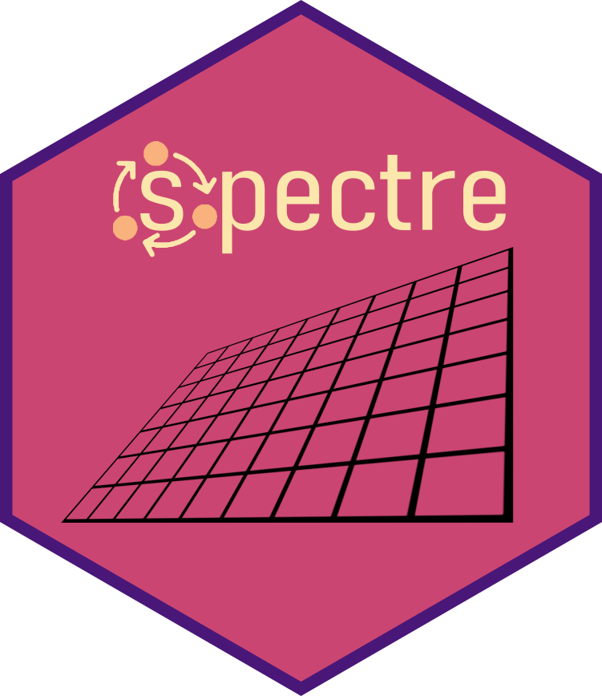

The goal of spectre is to provide an open source tool capable of predicting regional community composition at fine spatial resolutions using only sparse biological and environmental data.
Installation
Install the release version from CRAN:
To install the developmental version of spectre, use:
A full use case example is included in the “Getting started with spectre” vignette associated with the package.
Meta
- Please report any issues or bugs.
- Get citation information for
spectrein R doingcitation(package = 'spectre')
Code of Conduct
Please note that the spectre project is released with a Contributor Code of Conduct. By contributing to this project, you agree to abide by its terms.